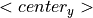

Tessellation Module (-T)¶
Module -T is the module for generating tessellations and multiscale tessellations of a finite domain of space, in 2D or 3D. The domain is generally convex, although non-convex shapes can also be obtained. Periodicity and semi-periodicity conditions can be prescribed. Module -T also enables the regularization of the tessellations for meshing with high quality elements. The tessellations are provided in scalar (vectorial) or raster formats. The scalar format described the tessellation cells using sets of vertices, edges and faces, while the raster format uses a regular raster of voxels (similarly to an EBSD map). Module -T also generates crystal orientations for the cells.
Tessellations can be generated from various types of morphological cell properties (option -morpho). Several predefined properties are available, such as those obtained by grain growth in metals (which are described by cell size and sphericity (circularity, in 2D) distributions). Custom properties can be specified using various metrics, including the size and sphericity (circularity, in 2D), the centroid or even the actual shape (using a raster tessellation), in terms of distributions or individual cell values. Standard analytical distributions are included, and custom numerical distributions can be read from a file. Global morphological properties, such as a cell aspect ratio or a columnar axis, can also be specified. The generated tessellations are general convex-cell tessellations represented as Laguerre (or Voronoi) tessellations whose seed attributes are set by optimization to obtain the desired cell properties [2]. Of course, it is also possible to generate standard tessellations (e.g. Poisson-Voronoi or regular tessellations). Cell groups can be defined to represent, for example, the different phases of a multiphased polycrystalline material (option -group).
Multiscale tessellations are characterized by the subdivision of the cells of a primary tessellation into secondary tessellations (and so on) and are obtained by combining into one, using ::, the option arguments that apply at the successive scales. The same value can be used for defining the tessellations at a given scale, or different values can be loaded using msfile(<file_name>), where <file_name> is a multiscale cell file). So, all capabilities available for generating a standard (single-scale) tessellations are available for generating the tessellations at the different scales of a multiscale tessellation.
The domain of space in which the tessellation is created can be of any convex shape. In 3D, cuboidal, cylindrical and spherical shapes (and a few other, exotic shapes) are directly supported while other morphologies can be defined from a set of planes (option -domain). Non convex domain shapes can be obtained by cutting the tessellation by different geometrical primitives once generated (option -transform cut [1]). Periodicity or semi-periodicity conditions can be applied to the tessellation (option -periodicity).
Crystal orientations can be randomly distributed (according to a uniform distribution function), either in the 3D space or along a specific orientation fiber, or uniformly distributed (also according to a uniform distribution function, option -ori). Uniform crystal orientation distributions ensure that all possible crystal orientations are equally represented (no orientation clustering). Crystal orientations can be written according to different descriptors (option -oridescriptor). It is also possible to define an analytical orientation spread for the cells (option -orispread).
Regularization can be applied to the tessellations and consists of removing their small edges and faces (option -regularization) which would otherwise be detrimental to generating meshes with high quality elements with module -M).
Output files describe the tessellation either at the scalar format (.tess) or at the raster format (.tesr). Both are input files of module -M and module -V. Third-party software file formats are also available.
The methods implemented for tessellation generation are described in [CMAME2011], [CMAME2018] and [JAC2018].
Here is what a typical run of module -T looks like:
$ neper -T -n 10 -reg 1
======================== N e p e r =======================
Info : A software package for polycrystal generation and meshing.
Info : Version 4.0.0
Info : Built with: gsl|muparser|opengjk|openmp|nlopt|libscotch (full)
Info : Running on 8 threads.
Info : <https://neper.info>
Info : Copyright (C) 2003-2020, and GNU GPL'd, by Romain Quey.
Info : No initialization file found (`/home/rquey/.neperrc').
Info : ---------------------------------------------------------------
Info : MODULE -T loaded with arguments:
Info : [ini file] (none)
Info : [com line] -n 10 -reg 1
Info : ---------------------------------------------------------------
Info : Reading input data...
Info : Creating domain...
Info : Creating tessellation...
Info : - Setting seeds...
Info : - Generating crystal orientations...
Info : - Running tessellation...
Info : Regularizing tessellation...
Info : - loop 2/2: 100% del=14
Info : Writing results...
Info : [o] Writing file :data:`n10-id1.tess'...
Info : [o] Wrote file :data:`n10-id1.tess'.
Info : Elapsed time: 0.036 secs.
========================================================================
Arguments¶
Input Data¶
-
-n<cell_number>¶ Specify the number of cells of the tessellation, which can be:
- an integer value or any expression based on the Tessellation Keys;
from_morphoto set the value from the morphology (option-morpho).
Default value: -.
-
-id<identifier>¶ Specify the identifier of the tessellation, which can be an integer value or any expression based on the Tessellation Keys.
The identifier is used as seed of the random number generator to compute the (initial) seed positions.
Default value:
1.
-
-dim<dimension>¶ Specify the dimension of the tessellation, which can be
2or3.Default value:
3.
-
-domain<domain_morphology[:transformation]>¶ Specify the domain morphology and, optionally, a transformation.
The domain morphology can be:
cube(<size_x>,<size_y>,<size_z>): a cuboidal shape (in 3D), orsquare(<size_x>,<size_y>): a rectangular shape (in 2D);cylinder(<height>,<diameter>[,<facet_nb>]): a cylindrical shape;sphere(<diameter>[,<facet_nb>]): a spherical shape (in 3D), orcircle(<diameter>[,<facet_nb>]): a circular shape (in 2D);facet_nbis the number of facets used to described a curved surface.planes(<file_name>): an arbitrary (non-degenerated) convex 3D shape, where<file_name>contains the total number of planes and then, for each plane, the 4 parameters of its equation:d,a,bandc,successively for an equation of the form , and where the plane normal is an outgoing vector of the domain. For the unit cube, the file can be as follows:6 0 -1 0 0 0 0 -1 0 0 0 0 -1 1 1 0 0 1 0 1 0 1 0 0 1
cell(<file_name>,<cell_id>): a tessellation cell, where<file_name>is the tessellation file and<cell_id>is the cell identifier;rodrigues(<crysym>): a Rodrigues space fundamental region, where<crysym>is the crystal symmetry;euler-bunge(<size_x>,<size_y>,<size_z>): the Euler space (Bunge convention), where<size_x>,<size_y>and<size_z>are the space dimensions (in degrees or radians [9]);stdtriangle(<segment_nb>): a standard stereographic triangle, where<segment_nb>is the number of segments used to describe the [011]–[111] line.
The transformation can be:
translate(<dist_x>,<dist_y>,<dist_z>): translate by distances<dist_x>,<dist_y>and<dist_z>alongx,yandz, respectively;rotate(<axis_x>,<axis_y>,<axis_z>,<angle>): rotate about the center and by an axis/angle pair (angle expressed in degrees);split(<dir>): splitting the domain in half along direction<dir>(x,yorz), which can be used to apply symmetries.
For a 2D tessellation, the axis parameters can be omitted in
rotate(defaultz), and the component can be omitted in
component can be omitted in scale(n/a) andtranslate(default0).An example is
sphere(1,1,0,0):translate(-0.5-0.5-0.5):scale(0.512).Default value:
cube(1,1,1)in 3D andsquare(1,1)in 2D.
-
-periodicity<periodicity>¶ Specify the periodicity conditions that apply to the domain (and therefore to the tessellation), which can be:
0ornone: no periodicity;1orall: full periodicity;- a list of periodicity directions, among
x,yandzand combined with,: semi-periodicity.
Default value:
0.
Is it also possible to load a tessellation or a raster tessellation from a file:
-
-loadtess<tess_file>¶ Load a tessellation from a Tessellation File (.tess).
Default value: -.
-
-loadtesr<tesr_file>[:<transformation1>][:<transformation2>:...]¶ Load a raster tessellation from a Raster Tessellation File (.tesr) and, optionally, apply transformations.
The transformations can be:
crop(<xmin>,<xmax>,<ymin>,<ymax>,<zmin>,<zmax>): crop a region of a raster tessellation, where<xmin>,<xmax>,<ymin>,<ymax>,<zmin>and<zmax>are the minimum and maximum positions alongx,yandz, respectively. For 2D raster tessellations, thezvalues can be omittedrasterscale(<fact>)orrasterscale(<fact_x>,<fact_y>,<fact_z>): : scale the number of voxels of a raster tessellation, wherefactoris the scaling factor that applies in the three directions, and<fact_x>,<fact_y>and<fact_z>are the scaling factors alongx,yandz, respectively. For 2D raster tessellations, the value can be omitted.
Default value: -*
Finally, it is possible to load a set of points.
-
-loadpoint<point_file>¶ Load points from a file formatted as a Position File.
Important
These points are used only for statistics, in option
-statpoint, and are not used for tessellation.Default value: -*
Morphology Options¶
These options can be used to set the cell morphology.
-
-morpho<morphology>¶ Specify morphological properties of the cells. This can be done in different ways:
Special morphological properties can be (mutually-exclusive):
voronoi: standard Poisson-Voronoi tessellation;graingrowthorgg: grain-growth morphology, which corresponds to a wider grain size distribution and higher grain sphericities than in a Voronoi tessellation. It actually is an alias fordiameq:lognormal(1,0.35),1-sphericity:lognormal(0.145,0.03)in 3D anddiameq:lognormal(1,0.42),1-circularity:lognormal(0.100,0.03)in 2D, which are described below. Thegraingrowth(<mean>)andgg(<mean>)variants can be used to provide an absolute mean grain size,<mean>(in which case-n from_morphomust be used, as described below).centroidal: a centroidal tessellation [3]. It actually is an alias forcentroid:seed, which is described below.cube(<N>)orsquare(<N>): regular tessellations into cubic or square cells, where<N>is the number of cells along a direction, orcube(<N1>,<N2>,<N3>)/square(<N1>,<N2>)for a regular tessellation into cubic / square cells, where<N1>,<N2>and<N3>are the number of cells along the three directions;tocta(<N>): regular tessellation into truncated octahedra, where<N>is the number of cells along a direction;lamellar(w=<width>[,v=<normal>][,pos=<pos>]): lamellar morphology, where<width>is the absolute lamella width or a series of absolute lamella widths combined with:, and<normal>is the lamella plane normal and can be:random: randomly-distributed normals taken from a uniform distribution (the default);(<dir_x>,<dir_y>,<dir_z>): a specific direction of space, (dir_x,dir_y,dir_z);crysdir(<crysdir_x>,<crysdir_y>,<crysdir_z>): a specific direction of the parent crystal, (<crysdir_x>,<crysdir_y>,<crysdir_z>).
posis the position of the first lamella and can be:random: random position (the default);start: first lamella starting (full-width) from the start point of the domain (along direction<dir>).
In the case of a multiscale tessellation, a multiscale cell file can be provided as value of
w,v, andpos.
Custom morphological properties can be defined using
<property>:<value>. The properties and the possible corresponding values can be:size: the size (volume in 3D and area in 2D) [11];diameq: the equivalent diameter [11];sphericity: the sphericity, and1-sphericity: 1 the sphericity (or
the sphericity (or circularityand1-circularity). [4] [5]All of
size,diameqandsphericity(and their variants) can be defined by statistical distributions or cell by cell. If the number of cells is defined using option-n, thesizeordiameqdistribution is scaled to get the specified number of cells. At the opposite, if-n from_morphois used, the number of cells is determined from thesizeordiameqdistribution. An interval of possible values can also be provided usinginterval(<min>,<max>). Cell-by-cell values can be provided usingfile(<file_name>), where<file_name>contains the cell values. A unique (numeral) value to be assigned to all cells can also be provided directly.centroidfor the centroid;centroidtolfor the centroid with a tolerance (see below for the format; centroids with a tolerance more than 1000 times as high as the minimum tolerance are simply disregarded);centroidsizefor combined centroid and size, andcentroiddiameqfor combined centroid and equivalent diameter.All of the
centroid*properties must be defined cell by cell, and provided usingfile(<file_name>). Forcentroid, the file must be a position file while, for more complete properties, the additional data should be provided on the following columns.tesrfor cells of a raster tessellation. It must be defined by a raster tessellation, provided usingfile(<file_name>). If-nis set tofrom_morpho, the number of cells is set to the number of cells of the raster tessellation.
Global cell properties can be defined as follows (mutually-exclusive):
columnar(<dir>)for a columnar morphology along direction<dir>, where<dir>can bex,yorz;bamboo(<dir>)for a bamboo morphology along direction<dir>, where<dir>can bex,yorz;aspratio(<r_x>,<r_y>,<r_z>), wherer_x,r_yandr_zrepresent relative length along thex,yandzdirections. For a 2D tessellation,r3can be omitted. When provided, other properties, such as the equivalent diameter or the sphericity (circularity, in 2D), are considered to apply to the cells as if they had no aspect ratio.
A tessellation file (
.tess) can be loaded usingfile(<file_name>).To specify several properties, combine them with
,(centroids and sizes / equivalent diameters should be seen as one property and specified withcentroidsize/centroiddiameq).Default value:
voronoi.
-
-morphooptiini<seed_attributes>¶ Specify the initial positions and/or weights of the seeds.
The general form of the argument is
coo:<coo_definition>,weight:<weight_definition>. Different values of<coo_definition>and<weight_definition>are available, depending on the value of option-morpho:<coo_definition>can be:random: random positions;packing: positions set by (rough) dense sphere packing using the weights as sphere radii;centroid: cell centroids;LLLFP2011: Lyckegaard et al.’s method [LLLFP2011];file(<file_name>): values to load from a Position File or a Tessellation File (.tess) (only the seed coordinates are considered).
The default depends on the value of option
-morpho: forvoronoi, it israndom, for a cell-size statistical distribution, it isnone, and for cell-based coordinate values (including-morpho tesr), it iscentroid.<weight_definition>can be:- a real value or an expression based on the Tessellation Keys, especially
radeq,diameq,avradeqandavdiameq; file(<file_name>): values from a Data File or a Tessellation File (.tess) (only the seed weights are considered).
The default depends on the value of option
-morpho: forvoronoi, it is0, for a cell-size statistical distribution, it isavradeq, and for cell-based size values (including-morpho tesr) , it isradeq.- a real value or an expression based on the Tessellation Keys, especially
Alternatively,
file(<file_name>)can be used to load the seed coordinates and weights from a unique Tessellation File (.tess) (thereby replicating the tessellation).Default value:
default.
-
-morphooptiobjective<objective_function> (secondary option)¶ Specify the objective function. The general form of the argument is
<prop1>:<objective_function1>,<prop2>:<objective_function2>,..., where<prop#>are properties as defined in option-morpho, and<objective_function#>are their objective functions. An objective function depends on the property and its value.Properties defined by a statistical distribution (which can be
size,diameq,sphericityor1-sphericity(orcircularityand1-circularity)) can take values of:chi2: Chi-square test;ks: Kolmogorov-Smirnov test;kuiper(Kuiper’s test);cmv(Cramér-von Mises test);ad(Anderson-Darling test);FL2( on );
);FL2w(weighted -norm on) [CMAME2018];FL2wu(weighted -norm on corresponding to FL2wfor a unimodal distribution).
The default value is
FL2w.The
centroidproperty can take values of a Minkowski distance between the seeds and centroids is used, and can beL1,L2orLinf.The
tesrproperty accepts an objective function which includes several factors.First, preprocessing operations to the raster tessellation can be applied using
transform(<operation1>,<operation2>,...), where<operation#>can be:scaleto scale the tessellation to correct for a global cell elongation;rasterscaleto scale the raster itself to correct for a global voxel elongation (which may result from operationscale).
Second, control points can be defined using
pts(<def1>,<def2>,...), where<def#>can be:region=<region>, whereregioncan besurffor surface voxels orallfor all voxels;res=<res>, where<res>is the resolution, i.e. the average number of control points along a direction of a grain.
Third, the expression of the objective function per se can be specified using
val(<expr>), whereexprcan be (mutually exclusive):bounddist: minimize the distance between the raster tessellation and tessellation cell boundaries;intervol: maximize the volume of intersection between the raster tessellation and tessellation (both provide similar results).
To define the objective function, combine the above factors using
+. The default value ispts(region=surf,res=5)+val(bounddist). A penalty is automatically added to the objective function in the case where cells are empty (including when-transform cutis used).The
generalvariable, finally, can be used to specify how the different components of the objective function are combined into the objective function (in the case where several properties are specified), using the syntaxgeneral:<norm>, wherenormcan beL1,L2orLinf; the default isL2.Examples are
diameq:FL2,1-sphericity:FL2,centroid:L1ortesr:pts(region=all,res=5)+val(intervol).Default value:
default.
-
-morphooptidof<dof1>,<dof2>,... (secondary option)¶ Specify the degrees of freedom, which can be
x,yandzfor the 3 coordinates, andwfor the weights.Default value:
x,y,z,w.
-
-morphooptistop<var1>=<val1>,<var2>=<val2>,... (secondary option)¶ Specify the stopping criteria of the optimization process, which can be:
eps: absolute error on the value of the objective function evaluated on a number of degrees of freedom basis (nlopt_epsornlopt_repsare the NLopt iteration-based values);reps: relative error on the value of the objective function evaluated on a number of degrees of freedom basis (nlopt_epsornlopt_repsare the NLopt iteration-based values);xeps: absolute error on the components of the solution vector;xreps: relative error on the components of the solution vector;<val>: value of the objective function;itermax: a maximum number of iterations;time: maximum computation time;loopmax: maximum number of iteration loops (see option-morphooptialgomaxiter).
Optimization stops as soon as one stopping criterion is verified.
Optimization can also be stopped anytime using the Ctrl+C command.
Default value:
eps=1e-6(val=1e-4,iter=10000for-morpho centroidal).
-
-morphooptialgo<algorithm1>,<algorithm2>,... (secondary option)¶ Specify the optimization algorithm, which can be:
subplex: Subplex (recommend);praxis: Praxis (recommended, except for high numbers of seeds, where it becomes highly memory-intensive) [10] ;neldermead: Nelder-Mead (not recommended);cobyla: Cobyla (not recommended);bobyqa: Bobyqa (not recommended);newuoa: Newuoa (not recommended).lloyd[(<fact>]: Lloyd’s algorithm using a specified factor (default1.9, only for-morpho centroidal).random(<seednb>,<dimnb>,<min>,<max>,<id>): random perturbations (use only if you know what you are doing). At each odd iteration, for each of theseednbseeds,dimnbof its attributes (among those specified by option-morphooptidof) are randomly perturbed, the norm of the total perturbation vector ranging from<min>to<max>;idis the identifier of the distribution (similarly to option-id). Variables can be any mathematical expression based onseednb(the total number of seeds),dim(the tessellation dimension),avdiameq(the average equivalent cell diameter) andinistep(the value of-morphooptiinistep); at each next (even) iteration, the attributes of the seeds are reverted to their original values.
In several algorithms are provided, the second etc. are used if the previous ones fails.
Default value:
subplex,praxis(lloydfor-morpho centroidal).
-
-morphooptigrid<var1>:<grid1>,<var2>:<grid2>,... (secondary option)¶ Specify the grids used to discretize the variable distributions. The variables are those defined in
-morpho, and the grid must beregular(<min>,<max>,<bin_nb>), where<min>and<max>are the minimum and maximum values of the grid interval, respectively, and<bin_nb>is the number of bins.Default value:
diameq:regular(-1,10,1100),size:regular(-1,10,1100),sphericity:regular(-0.1,1.1,1200),1-sphericity:regular(-0.1,1.1,1200).
-
-morphooptismooth<var1>:<val1>,<var2>:<val2>,... (secondary option)¶ Specify the standard deviations of the Gaussian distributions which are assigned to each cell data to compute the distributions. The variables are those defined in
-morpho.It is also possible to specify how the convolution functions should be treated, using
analyticalfor analytical functions ornumericalfor numerical functions (the default, recommended).Default value:
diameq:0.05,size:0.05,sphericity:0.005,numerical.
-
-morphooptideltamax<deltamax> (secondary option)¶ Specify the maximal value by which each variable is allowed to change during optimization.
Possible values: any ().
Default value:
HUGE_VAL.
-
-morphooptiinistep<inistep> (secondary option)¶ Specify the step used to perturb the seed positions and weights when optimization begins. The argument can be a real value of a mathematical expression based on
avdiameq, the average equivalent cell diameter.Default value:
avdiameq/10.
-
-morphooptialgomaxiter<iter_number> (secondary option)¶ Specify the maximum number of iterations allowed to the optimization algorithm to run without decreasing the objective function. The expression can be any mathematical expression based on variable
varnb(the total number of optimization variables).Default value:
max(varnb,1000).
-
-morphooptilogtime<variables> (secondary option)¶ Log the time taken during the optimization process. The variables can be among those provided in Time Keys.
Default value: -.
File extension:
.logtime.
-
-morphooptilogvar<variables> (secondary option)¶ Log the variables (seed attributes) during the optimization process. The variables can be among those provided in Variable Keys.
Default value: -.
File extension:
.logvar.
-
-morphooptilogval<variables> (secondary option)¶ Log the value of the objective function during the optimization process. The variables can be among those provided in Objective Function Value Keys.
Default value: -.
File extension:
.logval.
-
-morphooptilogdis<variables> (secondary option)¶ Log the distributions during the optimization process. The variables can be among those provided in Statistical Distribution Keys.
Default value: -.
File extension:
.logdis#.
-
-morphooptilogtesr<variables> (secondary option)¶ Log the raster tessellation voxel data during the optimization process. The variables can be among those provided in Tessellation Optimization Keys.
Default value: -.
File extension:
.logtesr.
Group Options¶
The following option can be used to define cell groups (each cell is assigned to a group). Groups are computed after tessellation and so can be defined from the cell properties (if scalar and raster tessellations are written in output, groups are computed independently for each of them).
-
-group<group_expression>¶ Specify the groups of the cells. The expression can be:
- an integer number or an expression based on the variables defined in Tessellation Keys or Raster Tessellation Keys, for example
"vol<0.1?1:2"; file(<file_name>): values to load from a file.
Default value: -.
- an integer number or an expression based on the variables defined in Tessellation Keys or Raster Tessellation Keys, for example
Crystal Orientation Options¶
-
-ori<ori_distrib>¶ Specify the type of crystal orientation distribution. It can be:
random: randomly-distributed orientations in 3D space;uniform: uniformly-distributed orientations in 3D space [7];orientation[:normal(<var>=<val>)]: a discrete orientation, with an optional disorientation chosen from a 3-variate normal distribution, where<var>can be:theta: the 1D standard deviation;<theta1>: the standard deviation about direction 1 ( );
);<theta2>: the standard deviation about direction 2 ( );
);<theta3>: the standard deviation about direction 3 ();<thetam>: the average angle of the distribution.
An example is
cube:normal(thetam=5);fiber(<dirc_x>,<dirc_y>,<dirc_z>,<dirs_x>,<dirs_y>,<dirs_z>)[:normal(<var>=<val>)]: randomly-distributed orientations along the fiber defined by crystal direction (<dirc_x>,<dirc_y>,<dirc_z>) parallel to sample direction (<dirs_x>,<dirs_y>,<dirs_z>), with an optional disorientation with respect to the fiber (defined as fororientation, where<var>can bethetaor<thetam>);parent[:normal(<var>=<val>)]: orientations inherited from the ones of the parent cells, with an optional disorientation (defined as fororientation);file(<file_name>[,<des>=<val>]): orientations to be read from file<file_name>and written using the descriptor<val>(see Rotations and Orientations, defaultrodrigues).
Finally, a sum of distributions can be provided; e.g.,
0.5*random+0.1*cube.Default value:
random.
-
-orispread<spread>¶ Specify the type of (in-cell) orientation spreads. It can be:
normal(<thetam>): a 3-variate normal distribution corresponding to an average misorientation angle (with respect to the average orientation) of<thetam>(expressed in degree), to be applied to all cells.file(<file_name>): different cell distributions (of the typenormal...), to load from a file.none: none.
Default value:
none.
-
-oricrysym<crysym>¶ Specify the crystal symmetry.
This is used by option
-ori uniformand to reduce the domain of definition of the orientation descriptors.Default value:
triclinic.
-
-orioptiini<ori_distrib> (secondary option)¶ Specify the initial crystal orientations, which can be:
random: random orientations;file(<file_name>[,des=<des>]): orientations to load from<file_name>and written using orientation descriptor<des>(defaultrodrigues).
Default value:
random.
-
-orioptifix<orientations> (secondary option)¶ Specify some orientations to fix during optimization. The argument can be:
file(<file_name>): logical values to load from<file_name>, a Data File;none: none.
Default value:
none.
-
-orioptistop<stopping_criterion> (secondary option)¶ Specify the stopping criterion of the optimization process, as a logical expression based on the following variables:
reps: relative error on the forces at orientations;iter: iteration number.
Default value:
"reps<1e-3||iter>=1e3".
-
-orioptineigh<neighborhood_radius> (secondary option)¶ Specify the radius of the neighborhood of orientations to be used to compute their forces (for
-ori uniform), which can be any mathematical or logical expression based on:dr: average radius of an orientation;Nstar: grand number of orientations (i.e., taking crystal symmetry into account).
Default value:
"Nstar<10000?pi:20*dr".
-
-orioptilogvar<variables> (secondary option)¶ Log the variables (the orientations) during the optimization process. The variables can be among those provided in Orientation Optimization Keys.
Default value: -.
File extension:
.logorivar.
Transformation Options¶
-
-transform<transformation1<,<transformation2>,...¶ Apply successive transformations to a tessellation (if scalar and raster tessellations are written in output, they are transformed independently from each other).
For a scalar tessellation, the transformations can be:
translate(<dist_x>,<dist_y>,<dist_z>): translate by distances<dist_x>,<dist_y>and<dist_z>alongx,yandz, respectively;rotate(<axis_x>,<axis_y>,<axis_z>,<angle>): rotate about the center and by an axis/angle pair (angle expressed in degrees);scale(<fact_x>,<fact_y>,<fact_z>): scale by<fact_x>,<fact_y>and<fact_z>alongx,yandz, respectively. For a 2D tessellation,<fact_z>can be omitted.cut(<primitive1>,<primitive2>,...): cut by a series of geometrical primitives (experimental). The primitives can be:hspace(<d>,<a>,<b>,<c>): the half-space of equation ;sphere(<center_x>,<center_y>,<center_z>,<rad>): a sphere of center (<center_x>,<center_y>,<center_z>) and radius<rad>;cylinder(<basis_x>,<basis_y>,<basis_z>,<axis_x>,<axis_y>,<axis_z>,<rad>): a cylinder of basis point (<basis_x>,<basis_y>,<basis_z>), axis (<axis_x>,<axis_y>,<axis_z>) and radius<rad>;ecylinder(<basis_x>,<basis_y>,<basis_z>,<axis_x>,<axis_y>,<axis_z>,<esaxis1_x>,<esaxis1_y>,<esaxis1_z>,<esaxis2_x>,<esaxis2_y>,<esaxis2_z>,<srad1>,<srad2>): an elliptic cylinder of basis point (<basis_x>,<basis_y>,<basis_z>), axis (<axis_x>,<axis_y>,<axis_z>), ellipse section first axis (<esaxis1_x>,<esaxis1_y>,<esaxis1_z>), ellipse section second axis (<esaxis2_x>,<esaxis2_y>,<esaxis2_z>), ellipse section first radius<esrad1>and ellipse section second radius<esrad2>;torus(<basis_x>,<basis_y>,<basis_z>,<axis_x>,<axis_y>,<axis_z>,<rad>,<srad>): a torus of basis point (<basis_x>,<basis_y>,<basis_z>), axis (<axis_x>,<axis_y>,<axis_z>), radius<rad>and section radius<srad>.
Append
ito a primitive name (to getcylinderi, etc.): the complementary shape.planecut(<d>,<a>,<b>,<c>): cut by the (oriented) plane of equation .crop(<primitive>): crop by a primitive. The primitive can be:cube(<xmin>,<xmax>,<ymin>,<ymax>,<zmin>,<zmax>)for a cube defined by its, and bounds.
slice(<d>,<a>,<b>,<c>)for slicing a 3D tessellation by the (oriented) plane of equation (yielding to a 2D tessellation).mergecell(<expr1>,<expr2>,...): merge cells matching successive expressions<expr1>,<expr2>, etc., where expressions are based on the variables defined in Tessellation Keys.rmcell(<expr1>,<expr2>,...)remove cells matching successive expressions<expr1>,<expr2>, etc., where expressions are based on the variables defined in Tessellation Keys.resetcellid: reset cell ids to get a contiguous numbering starting from 1.resetlabels: reset the domain face, edge and vertex labels.
For a raster tessellation, the transformations can be:
translate(<dist_x>,<dist_y>,<dist_z>): translate by distances<dist_x>,<dist_y>and<dist_z>alongx,yandz, respectively;rotate(<axis_x>,<axis_y>,<axis_z>,<angle>): rotate about the center and by an axis/angle pair (angle expressed in degrees);scale(<fact_x>,<fact_y>,<fact_z>): scale by<fact_x>,<fact_y>and<fact_z>alongx,yandz, respectively. For a 2D tessellation,<fact_z>can be omitted.renumber: renumber cells to remove those that are empty or have a zero id.unindex: assign a zero cell id to voxels of orientation (in Rodrigues vector).oriaverage: set the cell orientations (field**cell/ori) as the averages of the cell voxel orientations (field**oridata).crop(<primitive>): crop the raster tessellation by a primitive. The primitive can be:
cube(<xmin>,<xmax>,<ymin>,<ymax>,<zmin>,<zmax>): cube defined by its, and bounds;cylinder(<center_x>,<center_y>,<diameter>): cylinder of center (, ) of axis,square(<xmin>,<xmax>,<ymin>,<ymax>): square defined by its and bounds (2D tessellation only),circle(<center_x>,<center_y>,<diameter>): circle (2D tessellation only);
autocrop: reduce the raster to its minimal size.rasterscale(<fact_x>,<fact_y>,<fact_z>): scale the number of voxels of the raster by factors<fact_x>,<fact_y>and<fact_z>alongx,yandz, respectively. For a 2D tessellation,<fact_z>can be omitted.rmsat: remove the cell satellites, i.e. parts disconnected from the cell bulk.grow: grow the cells to fill the domain.tessinter(<tess_file>): intersect with tessellationtess_file.addbuffer(<buff_x>,<buff_y>,<buff_z>): add a buffer of<buff_x>void voxels on both sides in the x direction,<buff_y>void voxels on both sides in the y direction and<buff_z>void voxels on both sides in the z direction.2d: transform a 3D tessellation with 1 voxel along z into a 2D tessellation.
Default value: -.
-
-sort<sort_expression> (secondary option)¶ Sort the tessellation cells (typically to facilitate data post-processing) following a mathematical expression based on the tessellation variables (see Tessellation Keys). Sorting is done in ascending order.
Default value: -.
Regularization Options¶
-
-regularization<logical>¶ Regularize a tessellation, that is, removes the small edges and (indirectly) faces. Regularization enables meshing with higher-quality elements and generates some slightly non-planar internal faces (in 3D).
Control parameters can be set using options
-fmax,-seland-mloop.Default value:
0.
-
-fmax<maximum_angle>¶ Specify the maximum allowed face flatness fault (in degrees). The flatness fault is the maximum angle between the normals at two locations on a face.
Default value:
20.
-
-sel<length> or -rsel <relative_length> [secondary option]¶ Specify the absolute,
sel, or relative,rsel, (maximum) small edge length.rselis defined relative to the average cell size (volume in 3D and area in 2D), and a value of1corresponds to a length of 0.25 for a unit volume cell in 3D and 0.125 for a unit area cell in 2D. The value can be:- a real value that applies to all cells;
- an expression of the form
<default_sel>,<cell_expr1>:<cell_sel1>,<cell_expr2>:<cell_sel2>...to define different cell values, where<default_sel>is the default small edge length,<cell_expr#>is an expression defining the #th set of cells and<cell_sel#>is the corresponding small edge length.<cell_expr#>can be any expression based on variables provided in Tessellation Keys. Expressions are processed successively. file(<file_name>)to load values from a Data File.
The default value allows one to avoid mesh refinement with the default meshing parameters (see option
-rcl), but the value should typically be the same as the one of data-rcl.Default value:
-rsel 1.
-
-mloop<loop_number> [secondary option]¶ Specify the maximum number of regularization loops. During each loop, the small edges are considered for removal in turn from the shortest to the longest. Regularization stops when the maximum number of loops is reached or no edges are deleted during a loop.
Default value:
2.
Output Options¶
-
-o<file_name>¶ Specify the output file name (no extension).
Default value:
n<n>-id<id>.
-
-format<format1>,<format2>,...¶ Specify the format(s) of the output file(s), which can be:
- tessellation:
tess,geo,ply,stl[:bycell],obj,3dec,fe; - raster tessellation:
tesr,vtk; - orientations:
ori.
See Output Files for details on the file formats.
Default value:
tess.- tessellation:
-
-tesrformat<format1>,<format2>,...¶ Specify the format(s) of the raster output file(s), which can be:
ascii: ASCII;binary8: 8-bit binary / unsigned char-type;binary16orbinary16_big: 16-bit binary / short-type;binary32orbinary32_big: 32-bit binary / int-type.
binary16andbinary32correspond to little endianness whilebinary16_bigandbinary32_bigcorrespond to big endianness. [6]Default value :
binary16orbinary_big(depending on the system).
-
-tesrsize<number_of_voxels>¶ Specify the number of voxels of a raster tessellation along a direction of the domain, which can be:
<number>: a single integer value (in the case of a domain of different lengths along the different directions, the value is considered as the geometrical average of the number of voxels along the different directions, so that the voxels are as cubic as possible);<number_x>:<number_y>:<number_z>: integer values along thex,yandzdirections.
Default value:
20.
-
-oridescriptor<descriptor[:convention]>¶ Specify the orientation descriptor and (optionally) the orientation convention used in the
.tess,.tesrand.orifiles.The descriptor can be:
rodrigues: Rodrigues vector;euler-bunge,euler-kocksoreuler-roe: angles in Bunge, Kocks or Roe convention;rotmat: rotation matrix;axis-angle: axis / angle of rotation;angle: angle of rotation;quaternion: quaternion.
The convention can be
activeorpassive.Default value:
rodrigues:active.
-
-oriformat<format1>,<format2>,...¶ Specify the format(s) of the
.orioutput file(s), which can be:plain: plain format, for which descriptors are provided on successive lines;geof: Z-set format (Euler angles in Bunge convention are written).
If several formats are specified, the format is appended to the file name as in
<file_name>.ori-plainand<file_name>.ori-geof.Default value:
plain.
Post-Processing Options¶
The following two options provide general statistics on tessellations.
-
-stattess<key1>,<key2>,...¶ Provide statistics on the tessellation. Available keys are described in Tessellation Keys.
Default value: -.
File extension:
.sttess.
-
-stattesr<key1>,<key2>,...¶ Provide statistics on the raster tessellation. Available keys are described in Raster Tessellation Keys.
Default value: -.
File extension:
.sttesr.
The following options apply to the cells, seeds or cell groups of a tessellation or a raster tessellation, independently of its dimension.
-
-statcell<key1>,<key2>,...¶ Provide statistics on the tessellation cells. Available keys are described in Tessellation Keys and Raster Tessellation Keys.
Default value: -.
File extension:
.stcell.
-
-statseed<key1>,<key2>,...¶ Provide statistics on the tessellation seeds. Available keys are described in Tessellation Keys and Raster Tessellation Keys.
Default value: -.
File extension:
.stseed.
-
-statgroup<key1>,<key2>,...¶ Provide statistics on the tessellation cell groups. Available keys are described in Tessellation Keys and Raster Tessellation Keys.
Default value: -.
File extension:
.stgroup.For a tessellation, it is also possible to get statistics on an per-entity basis using the following options.
-
-statver<key1>,<key2>,...¶ Provide statistics on the tessellation vertices. Available keys are described in Tessellation Keys.
Default value: -.
File extension:
.stver.
-
-statedge<key1>,<key2>,...¶ Provide statistics on the tessellation edges. Available keys are described in Tessellation Keys.
Default value: -.
File extension:
.stedge.
-
-statface<key1>,<key2>,...¶ Provide statistics on the tessellation faces. Available keys are described in Tessellation Keys.
Default value: -.
File extension:
.stface.
-
-statpoly<key1>,<key2>,...¶ Provide statistics on the tessellation polyhedra. Available keys are described in Tessellation Keys.
Default value: -.
File extension:
.stpoly.
For a raster tessellation, it is also possible to get statistics on an per-voxel basis,
-
-statvox<key1>,<key2>,...¶ Provide statistics on the tessellation voxels. Available keys are described in Raster Tessellation Keys.
Default value: -.
File extension:
.stvox.
Finally, it is possible to get statistics for a particular set of points.
-
-statpoint<key1>,<key2>,...¶ Provide statistics on the points loaded with option
-loadpoint. Available keys are described in Point Keys.Default value: -.
File extension:
.stpoint.
Output Files¶
Tessellation¶
.tess: Neper (scalar) tessellation file (see Tessellation File (.tess));.tesr: Neper raster tessellation file (see Raster Tessellation File (.tesr));.geo: Gmsh geometry file describing (under a minimal form) the tessellation and can be used for interactive visualization with Gmsh;.ply: Ply (“Polygon File Format”) file describing the tessellation;.stl: STL (“STereoLithography”) file describing the tessellation. If-format stl:bycellis used, a separate file is written for each cell, whose name ends in-<id>.stl, whereidis the cell identifier written with leading zeros;.obj: Wavefront geometry file describing the tessellation;.3dec: Itasca 3DEC file describing the tessellation;.vtk: VTK file describing the raster tessellation and that is supported by Amitex_ffpt. Binary data are always written using big endians;.ori: orientation file describing the crystal orientations of the tessellation cells. The orientations are written on successive lines, using the descriptor specified by option-oridescriptor(see also Rotations and Orientations) and the writing convention specified by option-oriformat.
Statistics¶
Statistics files are first provided for the tessellation and raster tessellation. Each file contains the data specified to the corresponding -stat option and as described in Tessellation Keys and Raster Tessellation Keys.
.sttess: tessellation statistics file;.sttesr: raster tessellation statistics file.
Statistics files are also provided for cells, seeds, vertices, edges, faces, polyhedra and points. They are formatted with one line per entity. Each line contains the data specified to the corresponding -stat option and described in Tessellation Keys and Raster Tessellation Keys.
.stcell: tessellation cell statistics file;.stseed: tessellation seed statistics file;.stgroup: tessellation cell group statistics file;.stver: tessellation vertex statistics file;.stedge: tessellation edge statistics file;.stface: tessellation face statistics file;.stpoly: tessellation polyhedron statistics file;.stpoint: point statistics file.
Tessellation Optimization Log Files¶
Log files are provided for the time, variables, statistical distributions and objective function value. The files contain the data specified to the corresponding -morphooptilog option and described in Tessellation Optimization Keys.
.logtime: time file;.logvar: variables (seed attributes) file;.logdis#: statistical distribution files;.logval: objective function value file;-obj.tesr: target raster tessellation file.
Orientation Optimization Log Files¶
A log file is provided for the orientation variables.
The files contain the data specified to the
-orioptilogvar option and described in Orientation Optimization Keys.
.logorivar: variables (orientations) file.
Examples¶
Below are some examples of use of neper -T.
Generate a Voronoi tessellation containing 100 cells:
$ neper -T -n 100
Generate a different Voronoi tessellation containing 100 cells (identifier = 2):
$ neper -T -n 100 -id 2
Use an elongated domain and generate a Voronoi tessellation containing 100 cells:
$ neper -T -n 100 -domain "cube(3,1,0.33)"
Generate a Voronoi tessellation containing 100 cells and apply regularization:
$ neper -T -n 100 -reg 1
Generate a 2D Voronoi tessellation containing 100 cells:
$ neper -T -n 100 -dim 2
Generate a tessellation containing 100 cells with an
xcolumnar axis:$ neper -T -n 100 -morpho "columnar(x)"
Generate a tessellation containing 100 cells with a bamboo structure along
x:$ neper -T -n 100 -morpho "bamboo(x)"
Generate a tessellation containing 100 cells with experimental grain-growth morphological properties:
$ neper -T -n 100 -morpho gg
Generate a tessellation containing 100 cells with experimental grain-growth morphological properties and define groups by splitting cells based on their ids:
$ neper -T -n 100 -morpho gg -group "id<=50?1:2"
Generate a tessellation containing 100 cells with experimental grain-growth morphological properties and an aspect ratio of 2:1:0.5:
$ neper -T -n 100 -morpho "gg,aspratio(2,1,0.5)"
Generate a tessellation containing 100 cells with experimental grain-growth morphological properties, and get the equivalent diameters and sphericities of the cells:
$ neper -T -n 100 -morpho gg -statcell diameq,sphericity
Generate a tessellation of specified absolute grain size distribution (the number of cells is determined accordingly):
$ neper -T -n from_morpho -morpho "diameq:lognormal(0.1,0.03),1-sphericity:lognormal(0.145,0.03)"
Generate a tessellation in a non-convex domain (by cutting the tessellation once generated):
$ neper -T -n 100 -morpho gg -transform "cut(cylinder(1.2,0.5,0.5,0,1,0,0.4))"
Generate a 2-scale Voronoi tessellation containing 100 x 10 cells:
$ neper -T -n 100::10
Generate a 2-scale Voronoi tessellation containing 100 x 10 cells, with different tessellations at scale 2 (identifier = 2) (identifier = 2):
$ neper -T -n 100::10 -id 1::2
Generate a 2-scale tessellation containing 10 primary cells with grain-growth morphological properties, each one divided into lamellae` of width 0.1:
$ neper -T -n 10::from_morpho -morpho "gg::lamellar(w=0.1)"
Generate a 2-scale Voronoi tessellation containing 10 primary cells with grain-growth morphological properties, each one divided into lamellae` of widths loaded from file
lam_widthand plane normals loaded from filelam_normal:$ neper -T -n 10::from_morpho -morpho "gg::lamellar(w=msfile(lam_width),v=msfile(lam_normal))" lam_width: 1 0.05 2 0.10 3 0.05 4 0.10 5 0.05 6 0.10 7 0.05 8 0.10 9 0.05 10 0.10 lam_normal: 1 1.000000 0.000000 0.000000 2 0.000000 1.000000 0.000000 3 1.000000 0.000000 0.000000 4 0.000000 1.000000 0.000000 5 1.000000 0.000000 0.000000 6 0.000000 1.000000 0.000000 7 1.000000 0.000000 0.000000 8 0.000000 1.000000 0.000000 9 1.000000 0.000000 0.000000 10 0.000000 1.000000 0.000000
Generate a 2-scale Voronoi tessellation containing 3 primary cells divided into 1, 10 and 100 secondary cells, respectively:
$ neper -T -n "3::msfile(myfile)" -id 1::1 myfile: 1 1 2 10 3 100
Generate a 2-scale Voronoi tessellation containing 2 x 3 cells with specific seed coordinates at both scales (files
coo1andcoo2):$ neper -T -n 2::3 -id 1::1 -morphooptiini "coo,file(coo1),weight,0::coo,msfile(coo2),weight,0" -morpho voronoi coo1: 0.25 0.50 0.50 0.75 0.50 0.50 coo2: 1 0.25 0.10 0.50 1 0.25 0.50 0.50 1 0.25 0.90 0.50 2 0.75 0.50 0.10 2 0.75 0.50 0.50 2 0.75 0.50 0.90
Note that coo1 is a simple position file (Position File) while coo2 is a multiscale cell file (Multiscale Cell File).
Generate a Voronoi tessellation containing 100 cells with uniformly distributed crystal orientations and cubic crystal symmetry:
$ neper -T -n 100 -oricrysym cubic -ori uniform
Generate 100 uniformly distributed crystal orientations with cubic crystal symmetry (no tessellation):
$ neper -T -n 100 -oricrysym cubic -ori uniform -for ori
References¶
| [CMAME2011] |
|
| [CMAME2018] | (1, 2)
|
| [JAC2018] |
|
| [LLLFP2011] |
|
| [1] | This capability is experimental and may fail as the local shape curvature approaches the cell size. |
| [2] | Any normal tessellation, i.e. tessellation made of convex cells intersecting (one-to-one) along vertices, edges and faces, can be generated at a given scale. There is no limitation owing to the use of the Laguerre parameterization. For more complex structures, see the multiscale capability. |
| [3] | centroidal is not recommended as it does not correspond to a morphological property per se; size and/or sphericity properties should be used instead. |
| [4] | Terms sphericity and circularity apply to 3D and 2D, respectively, but can be used interchangeably. The sphericity of a polyhedron corresponds to the ratio of the surface area of the sphere of equivalent volume to the surface area of the polyhedron. Similarly, the circularity of a polygon corresponds to the ratio of the perimeter of the circle of equivalent surface area to the perimeter of the polygon. |
| [5] | The reason behind the 1-sphericity (or 1-circularity) variable is that, for a grain growth microstructure, 1 the sphericity follows a lognormal distribution []. |
| [6] | Endianness is both written in the tesr file and tested on the system when reading the tesr file, so that the user normally does not have to care about it (even when transferring files across systems). |
| [7] | The crystal symmetry must be specified using -oricrysym.` |
| [8] | Cell orientations are rotated accordingly. |
| [9] | The angle convention is determined automatically from the values. |
| [10] | The amount of memory needed approximately scales with the square of the number of seeds. -n 10000 -morpho gg requires 12 Gb of RAM. |
| [11] | (1, 2) size and diameq should generally be considered as mutually exclusive. |